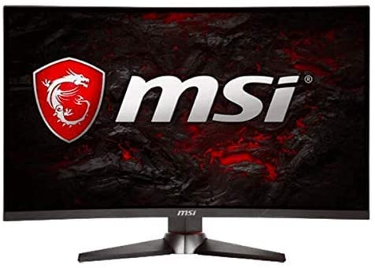
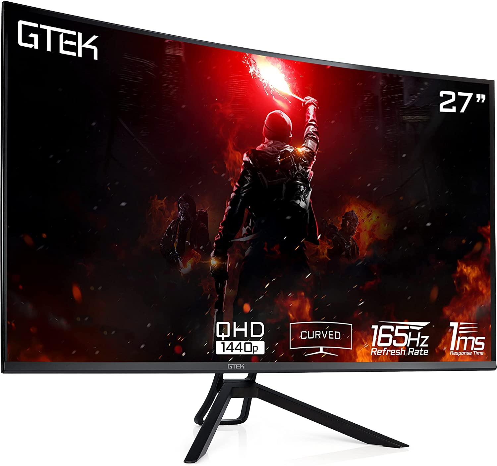
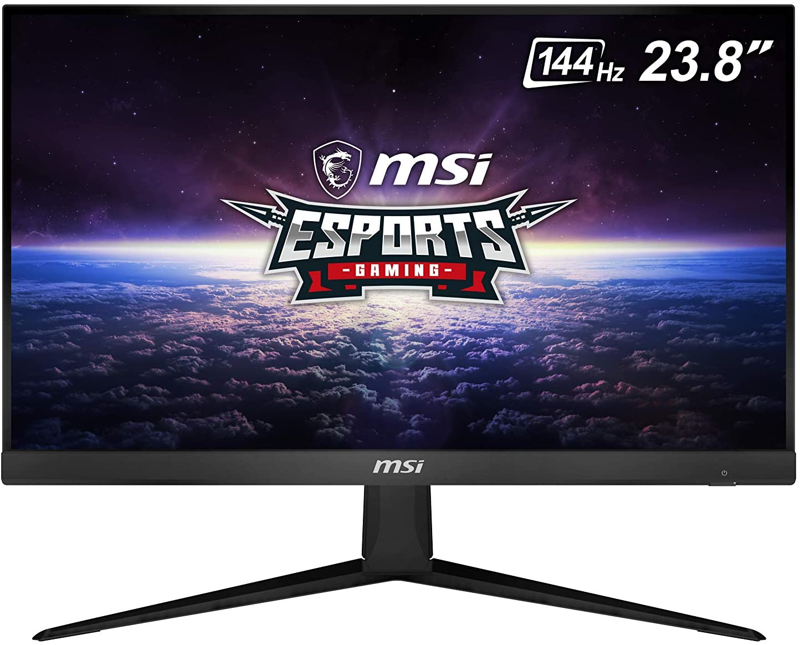
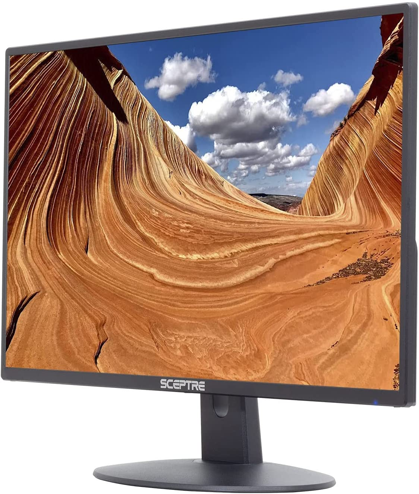

👾BETA TESTER`S👾
Expertos en gaming
MONITORES

MSI Full HD - Monitor curvo para juegos de 24 pulgadas (Optix MAG240CR)
- Pantalla curvada para juegos (1800R) – La mejor inmersión de juego
- Alta resolución FHD: los títulos del juego se verán aún mejor, mostrando más detalles debido a la resolución FHD
- Colores verdaderos: DCI-P3 90% y sRGB 115%
- Tiempo de respuesta de 1 ms: elimina el desgarro de la pantalla y las tasas de fotogramas entrecortadas
- AMD FreeSync: evita que la pantalla se rompa

GTEK Q2765VC Monitor de juego curvo sin marco de 27 pulgadas, QHD 2K 2560 x 1440P, 1800R, VA 1ms, 165Hz
- Pantalla ESPORT: 27 pulgadas Quad HD 2560 x 1440 @ 165 Hz (soporta 144 Hz) frecuencia de actualización y 1 ms de tiempo de respuesta
- Ultrarrápido: nuestras pantallas ultrarrápidas eliminan el desgarro de imagen
- Diseño sin marco: diseñado y construido para la plataforma de juego perfecta con menos espacio desperdiciado de tu monitor.
- Conectividad flexible: la amplia gama de conexiones disponibles para el monitor de juegos es DisplayPort, HDMI.
- Sincronización gratuita: la tecnología Free Sync proporciona tasas de actualización variables que reducen el retraso

MSI Monitor de juegos IPS de 24" FHD (1920 x 1080) sin reflejos con bisel súper estrecho 144Hz 1ms 16:9 HDMI
- Monitor de juegos ESports - Diseñado para torneos profesionales de deportes electrónicos
- Tiempo de respuesta de 1 ms - Elimina el desgarro de la pantalla y las velocidades de fotogramas cortadas
- AMD FreeSync: evita desgarros de pantalla
- Ángulo de visión amplio de 178°
- Aplicación OSD para juegos: crea la configuración de visualización definitiva para tu juego

Sceptre E205W-16003R - Monitor LED ultradelgado sin marco, con HDMI
- Perfil ultrafino de 24.0 in.
- Diseño metálico elegante y contemporáneo.
- Rango de potencia (V, A, Hz)- Adaptador AC-DC Entrada 100-240VAC, 50/60Hz,
- 2 puertos HDMI (convertible a DVI). Relación de contraste: 1000: 1
- Soporte de pared VESA listo. Soporte de señal de entrada HDMI – 1920 x 1080 @ 75 Hz, 1080/60p, 1080/60i, 720p, 480p, 480i, altavoces integrados – 2 x 2 W 8 Ohm